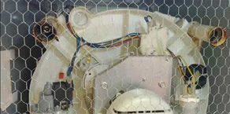
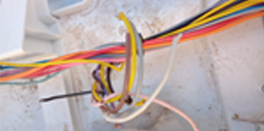

Redes de proteção
Estas redes servem para garantir que animais de pequeno porte entrem na sua maquina, como: sapos, ratos e até cobra.

Fiação àpos ratos roerem
É assim que a fiação da maquina fica ápos a entrada de ratos ou outros animais.